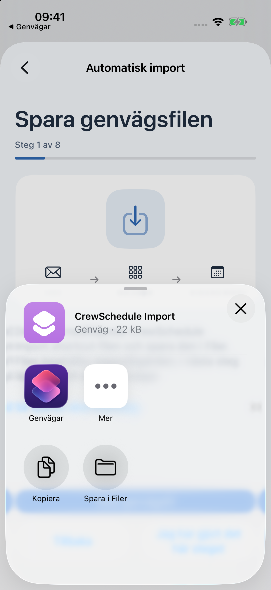
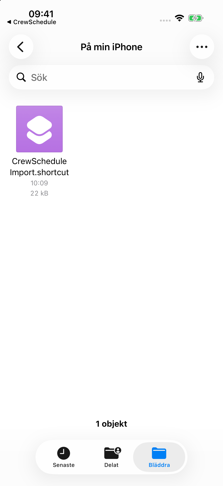
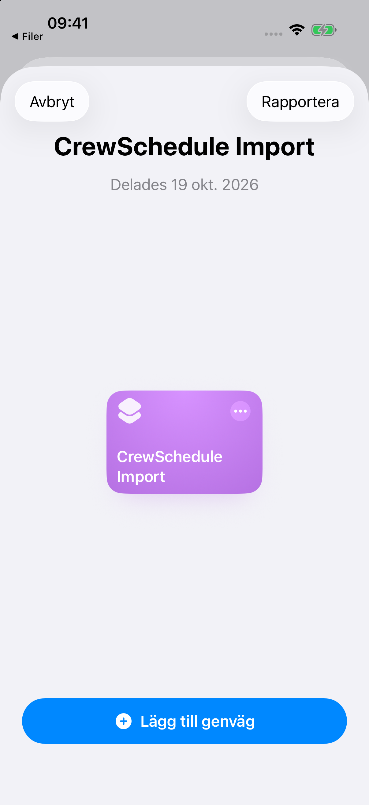
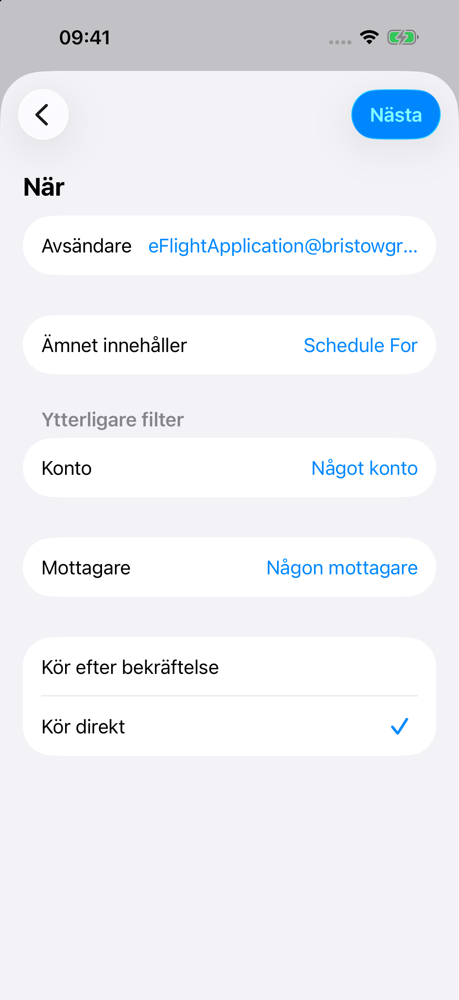
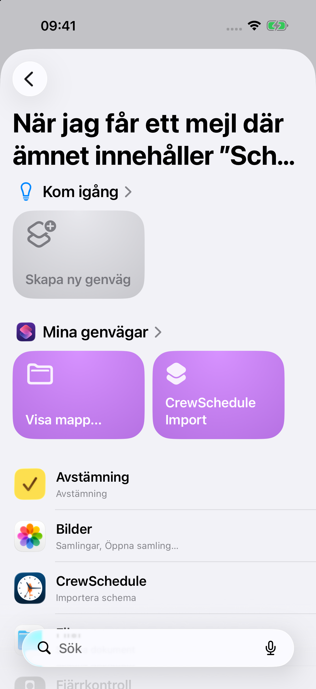
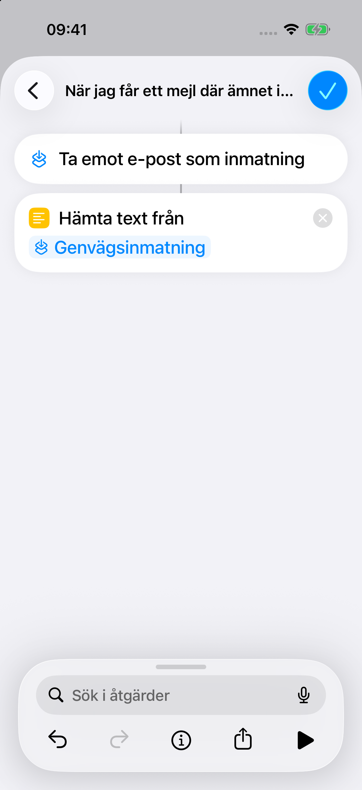
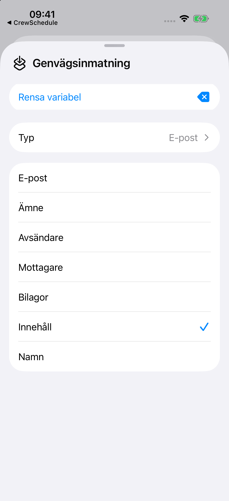
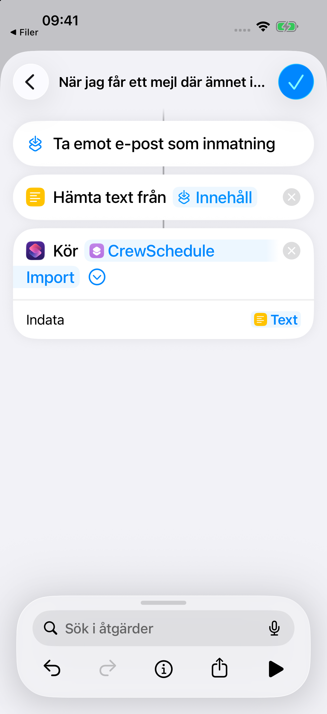
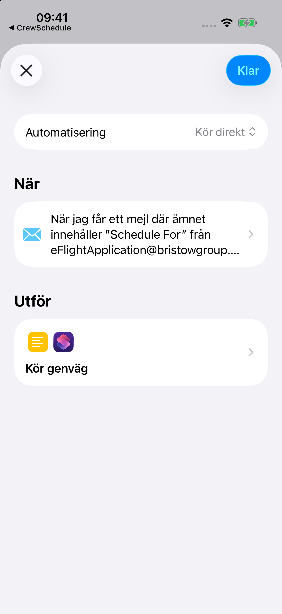

Steg 1 / 10
Spara importgenvägen
Öppna Inställningar → Automatisk import i CrewSchedule. Välj Dela genvägsfil och spara sedan filen i Filer.
Filen heter CrewSchedule Import.shortcut.

Steg 2 / 10
Hitta filen
Öppna Filer och leta upp CrewSchedule Import.shortcut i mappen du valde.
Gå tillbaka till den här guiden i CrewSchedule när du behöver nästa steg.

Steg 3 / 10
Lägg till genvägen
Tryck på filen och lägg till CrewSchedule Import i Genvägar.
Att lägga till genvägen skapar ingen e-postautomatisering.

Steg 4 / 10
Välj e-postutlösare
Öppna Automatisering i Genvägar, tryck på + och välj E-post. Ange Avsändare som eFlightApplication@bristowgroup.com och Ämnet innehåller som Schedule For. Välj sedan Kör direkt.
Alla filter måste stämma. Kontrollera att det här är kontot som tar emot schemamejlet.

Steg 5 / 10
Skapa automatiseringens åtgärder
Efter e-postfiltret väljer du Skapa ny genväg. Då skapas åtgärderna som körs när ett mejl matchar filtret.

Steg 6 / 10
Hämta mejlets text
Lägg till Hämta text från inmatning och välj Genvägsinmatning.
Åtgärden tar emot innehållet från mejlet som matchade filtret.

Steg 7 / 10
Använd mejlets innehåll
Tryck på Genvägsinmatning i Hämta text från inmatning, expandera variabelpanelen och välj Innehåll.
Då skickas själva mejlinnehållet vidare till textåtgärden.

Steg 8 / 10
Skicka texten till CrewSchedule
Lägg till Kör genväg under Hämta text från inmatning och välj CrewSchedule Import. Fäll ut åtgärden och ange textresultatet från Hämta text från inmatning som Indata.
Kontrollera fältet Indata: det räcker inte att bara välja genvägens namn.

Steg 9 / 10
Spara på en enhet
Spara automatiseringen. Ha den aktiverad bara på enheten som tar emot och importerar schemamejlen. Om genvägens integritetsinställningar erbjuder Tillåt körning när låst kan du aktivera det om du vill.
Stäng av den gamla automatiseringen innan du flyttar automatisk import till en annan enhet.

Steg 10 / 10
Kontrollera nästa schemamejl
Tillåt åtkomst om Genvägar frågar. Gå tillbaka till CrewSchedule och bekräfta att du har konfigurerat automatiseringen. Kontrollera importhistoriken när nästa riktiga schemamejl har kommit.
Du kan slutföra konfigurationen nu; du behöver inte skicka ett testmejl. En manuell körning visar inte att e-postutlösaren fungerar.
Om det inte fungerar
Kontrollera att mejlet kom till rätt konto, att båda filtren stämmer och att automatiseringen körs direkt. Kontrollera sedan att textresultatet är kopplat till Kör genväg. Öppna CrewSchedules importhistorik för eventuella fel eller scheman som behöver granskas.